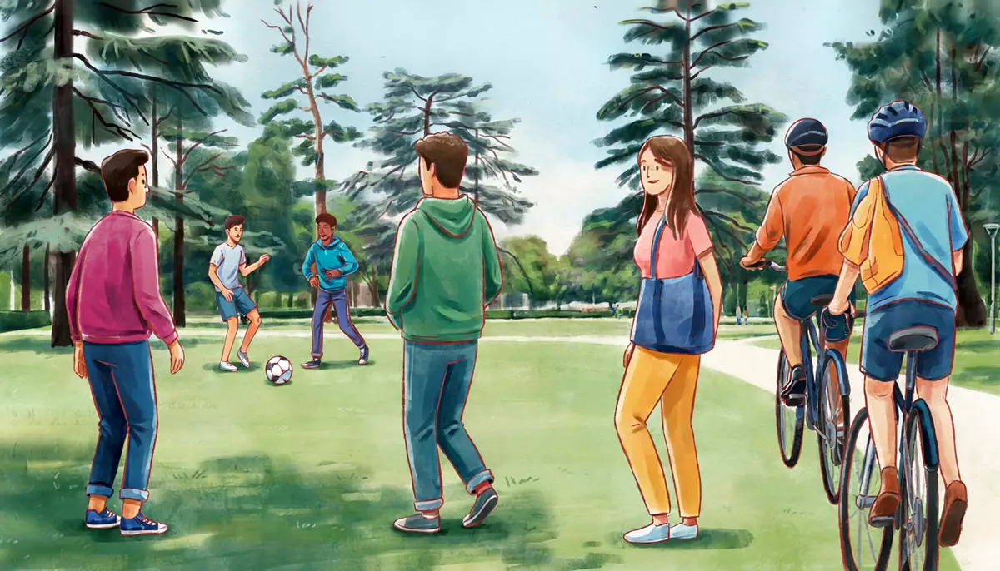

I can say what I do in my free time and how often.Goal of this lesson · CEFR Sustained monologue: describing experience A1; Conversation A1
Paso 1 de 8
EscuchaListen
Listen to the conversation, then answer the questions.

Sunday, 9 a.m. Diego comes downstairs with a ball and finds Alex in the kitchen. tú (Alex and Diego)
First listen without the text. Press Escuchar todo and answer the first question. Then show the Spanish text and listen again.
ChooseWhat does Diego do on Sundays?
Your answer:
D
Diego¡Buenos días, Alex! ¿Qué haces?Morning, Alex! What are you doing?
A
AlexNada, leo las noticias. Los domingos siempre desayuno tarde.Nothing, I'm reading the news. On Sundays I always have breakfast late.
D
DiegoYo voy al parque. Los domingos juego futbol con mis amigos.I'm going to the park. On Sundays I play soccer with my friends.
A
Alex¿Todos los domingos?Every Sunday?
D
DiegoSí, casi siempre. Y a veces ando en bici en Reforma: los domingos cierran la avenida a los coches.Yes, almost always. And sometimes I ride my bike on Reforma: on Sundays they close the avenue to cars.
A
Alex¡Qué padre! Yo nunca ando en bici aquí. Me da miedo el tráfico.Cool! I never ride a bike here. The traffic scares me.
D
DiegoPero los domingos no hay coches. Oye, ¿y tú qué haces en tu tiempo libre?But on Sundays there are no cars. Hey, and what do you do in your free time?
A
AlexCorro en el parque tres veces a la semana, leo mucho y a veces voy al cine.I run in the park three times a week, I read a lot and sometimes I go to the movies.
D
Diego¿Y hoy qué vas a hacer?And what are you going to do today?
A
AlexEn la mañana tengo que preparar mis clases. En la tarde voy a ir al Museo de Antropología con Mariana.In the morning I have to prepare my classes. In the afternoon I'm going to go to the Anthropology Museum with Mariana.
D
Diego¡Está padrísimo! Bueno, me voy. ¡Nos vemos en la noche!It's awesome! OK, I'm off. See you tonight!
1
ChooseListen again and answer.
How often does Alex run?
Why doesn't Alex ride a bike in Mexico City?
What is Alex going to do this afternoon?
Paso 2 de 8
FíjateNotice
Read how it works. Play the examples and repeat them aloud.
The present tense: all persons
You know yo, tú, él. Here is the whole present tense of regular verbs. There are three groups, by the ending of the infinitive: -ar, -er, -ir. -er and -ir verbs share most endings; they differ only in nosotros (comemos / vivimos).
hablar
comer
vivir
yo
hablo
como
vivo
tú
hablas
comes
vives
él, ella, usted
habla
come
vive
nosotros, nosotras
hablamos
comemos
vivimos
ellos, ellas, ustedes
hablan
comen
viven
From the conversation:
Nada, leo las noticias. Los domingos siempre desayuno tarde.Nothing, I'm reading the news. On Sundays I always have breakfast late.
Corro en el parque tres veces a la semana, leo mucho y a veces voy al cine.I run in the park three times a week, I read a lot and sometimes I go to the movies.
The Spanish present also covers "I'm doing" right now: ¿Qué haces? Leo las noticias. = What are you doing? I'm reading the news.
Three useful irregular verbs: ir, hacer, jugar
Ir (to go) is completely irregular. Hacer (to do, to make) is irregular only in yo: hago. Jugar (to play a game or sport) changes u → ue, except in nosotros. To say where you go: ir a + place (voy al parque, vamos a la playa).
ir
hacer
jugar
yo
voy
hago
juego
tú
vas
haces
juegas
él, ella, usted
va
hace
juega
nosotros
vamos
hacemos
jugamos
ellos, ustedes
van
hacen
juegan
From the conversation:
¡Buenos días, Alex! ¿Qué haces?Morning, Alex! What are you doing?
Yo voy al parque. Los domingos juego futbol con mis amigos.I'm going to the park. On Sundays I play soccer with my friends.
How often?
From most to least often: siempre (always), casi siempre, a veces (sometimes), casi nunca, nunca (never). With nunca, put it before the verb (nunca ando en bici) or use no + verb + nunca (no ando nunca en bici). Also: todos los días (every day), los domingos (on Sundays), tres veces a la semana (three times a week).
From the conversation:
Sí, casi siempre. Y a veces ando en bici en Reforma: los domingos cierran la avenida a los coches.Yes, almost always. And sometimes I ride my bike on Reforma: on Sundays they close the avenue to cars.
¡Qué padre! Yo nunca ando en bici aquí. Me da miedo el tráfico.Cool! I never ride a bike here. The traffic scares me.
Plans and obligations: ir a…, tener que…
Two Andamio structures: conjugate one verb and add any infinitive. Ir a + infinitivo = going to (plans): voy a ir al museo. Tener que + infinitivo = to have to: tengo que preparar mis clases.
From the conversation:
¿Y hoy qué vas a hacer?And what are you going to do today?
En la mañana tengo que preparar mis clases. En la tarde voy a ir al Museo de Antropología con Mariana.In the morning I have to prepare my classes. In the afternoon I'm going to go to the Anthropology Museum with Mariana.
Paso 3 de 8
PracticaPractice
Do the exercises in order. They get freer as you go.
1
Type the missing wordsComplete with the present tense.
Mis amigos y yo en el parque los domingos. (correr)
My friends and I run in the park on Sundays.
¿Ustedes en el centro? (vivir)
Do you all live downtown?
Mariana mucho los fines de semana. (bailar)
Mariana dances a lot on the weekend.
Nosotros en la fonda de don Chuy. (comer)
We eat at Don Chuy's fonda.
¿Tú el periódico? (leer)
Do you read the newspaper?
Mis papás en Chicago. (vivir)
My parents live in Chicago.
2
ChooseChoose the right form of ir, hacer or jugar.
Los sábados (yo) ___ al mercado con doña Lupita.
¿Qué ___ tú los domingos?
Diego ___ futbol con sus amigos.
Nosotros ___ al cine los viernes.
3
Listen and chooseHow often? Listen and choose.
How often does Mariana go to salsa classes?
Show what they say
Mariana: Voy a clases de salsa dos veces a la semana, los martes y los jueves.
Doña Lupita and TV in the morning:
Show what they say
Doña Lupita: Yo nunca veo la tele en la mañana. Prefiero el radio.
How does Rocío usually get to work?
Show what they say
Rocío: Casi siempre camino al trabajo. A veces tomo el metro.
4
Put the words in orderPut the words in order.
On Sundays I play soccer with my friends.
I never ride a bike in the city.
Today I have to prepare my classes.
5
Say it in SpanishNow you. Say it in Spanish (or type it).
Ask a friend what he does in his free time.
¿Qué haces en tu tiempo libre?
Say you run three times a week.
Corro tres veces a la semana.
Say you sometimes go to the movies.
A veces voy al cine.
Say you never watch TV.
Nunca veo la tele.
Say you're going to go to the museum this afternoon.
En la tarde voy a ir al museo.
Say you have to work tomorrow.
Mañana tengo que trabajar.
6
Your own sentencesYour free time.
Write 4–5 sentences: what you do in your free time and how often, and one plan for this weekend with voy a… and one obligation with tengo que….
Show a model answer
En mi tiempo libre leo mucho y escucho música. Corro dos veces a la semana y a veces juego tenis con mi hermano. Nunca veo la tele en la mañana. Este fin de semana voy a ir a un concierto, pero el sábado tengo que trabajar.
Check your answer:
Paso 4 de 8
PalabrasWords
Listen to each word and repeat it. Then do the quick check.
Mariana writes a blog for visitors to Mexico City. Read her post about Sundays.
Blog post
Domingo en bici por Reforma
Los domingos, de ocho de la mañana a dos de la tarde, el Paseo de la Reforma se cierracloses a los coches. Es el paseo dominicalSunday ride «Muévete en Bici». Miles dethousands of personas caminan, corren, patinanskate o andan en bici por la avenida.
Si no tienes bici, no hay problema: hay bicicletas gratisfree en algunos módulosstands, con una identificación. También hay clases de baile y de yoga.
Yo voy casi todos los domingos con unas amigas. Empezamos en el Ángel de la Independencia y vamos hastaas far as el Zócalo. Después, desayunamos tamales en el centro. ¡Es mi plan favorito!
Words with a dotted underline have a translation: tap or hover.
1
ChooseAnswer the questions about the text.
When is Reforma closed to cars?
What do you need to borrow a free bike?
What does Mariana do after the ride?
Paso 6 de 8
CulturaCulture
Read about the culture behind the language.
Sundays in the city
Since 2007, Mexico City closes the Paseo de la Reforma and other streets to cars every Sunday morning for Muévete en Bici, the city's car-free Sunday ride. Families walk, cycle and skate along the avenue where on Monday there will be heavy traffic.
Soccer (futbol, spelled without an accent in Mexico) is the most popular sport. Mexico City has three big Liga MX teams: América, Cruz Azul and Pumas (the UNAM's team). On Sunday mornings, parks fill with amateur matches, and the llaneros (from llano, open field) play wherever there's grass.
Other Sunday favorites: Chapultepec Park and its museums (the National Museum of Anthropology is one of the most visited in Latin America), rowing on the lake, and long family lunches.
Elsewhere: Car-free Sundays started in Bogotá, Colombia: its Ciclovía has run since the 1970s and inspired cities across the Americas, including Mexico City.
Sources
Gobierno de la Ciudad de México, Secretaría de Movilidad: Paseo Dominical Muévete en Bici (since 2007; Sundays 8:00–14:00).
Real Academia Española, Diccionario de la lengua española: «futbol» and «fútbol» are both correct; futbol is the usual form in Mexico.
1
ChooseCheck: what did you learn?
Muévete en Bici is…
Paso 7 de 8
Tu turnoYour turn
Now use it: do the role play, then write.
Role play: What do you do on weekends?
At the language exchange, Mariana asks about your free time. Talk about what you do, how often, and your plans for this weekend. Use tú.
You
Say what you do in your free time.
Say how often (at least two frequency expressions).
Ask Mariana what she does.
Say what you're going to do this weekend and one thing you have to do.
React to her plans (¡Qué padre!).
Mariana
Asks what you do in your free time.
Says she goes to salsa twice a week and cycles on Sundays.
Asks what you're going to do this weekend.
Invites you to Muévete en Bici on Sunday.
1. Listen to a model
One way the conversation could go. Listen, then try it yourself without looking.
M
Mariana¿Y qué haces en tu tiempo libre?And what do you do in your free time?
A
AlexLeo mucho y corro tres veces a la semana. A veces voy al cine. ¿Y tú?I read a lot and I run three times a week. Sometimes I go to the movies. And you?
M
MarianaVoy a clases de salsa dos veces a la semana, y los domingos ando en bici en Reforma.I go to salsa classes twice a week, and on Sundays I ride my bike on Reforma.
A
Alex¡Qué padre! Yo nunca ando en bici aquí.Cool! I never ride a bike here.
M
Mariana¿Y qué vas a hacer este fin de semana?And what are you going to do this weekend?
A
AlexEl sábado tengo que preparar mis clases, pero el domingo voy a ir a Chapultepec.On Saturday I have to prepare my classes, but on Sunday I'm going to go to Chapultepec.
M
Mariana¿Y si vamos en bici? ¡Los domingos no hay coches!What if we go by bike? There are no cars on Sundays!
2. Record yourself
Say your part aloud (pause the model after each of Mariana's lines), or answer the questions in the role card. Then play it back and compare.
3. Practice with an AI partner (optional)
Copy this prompt into ChatGPT or Claude, switch on voice mode, and have the conversation. It plays Mariana.
Stuck? Say «ayuda» and it gives you a hint in English, then carries on.
Finished? Say «terminamos» and it gives you feedback in English: what you did well, your mistakes, and useful phrases for next time.
Let's practice Spanish (Mexican Spanish, level A1). You are Mariana, 28, an architect in Mexico City and my friend from the language exchange. Use "tú".
We're chatting at the Thursday language exchange. About you: you go to salsa classes twice a week (Tuesdays and Thursdays), you ride your bike on Reforma almost every Sunday, you hardly ever watch TV, and this Saturday you have to work.
Rules:
- Speak only Spanish, short turns (1-2 sentences), simple language for an A1 learner. Speak slowly and use very common words.
- Ask me what I do in my free time, how often, and what I'm going to do this weekend. Tell me about your own habits when I ask. Use the present tense, "ir a" and "tener que". One question at a time.
- You play only this one person. Never speak as anyone else, and don't describe what other people say or do.
- If I make a mistake, don't stop me: repeat what I said correctly in your answer (for example: if I say "Yo juga tenis", you say "Ah, juegas tenis. ¡Qué padre!").
- Near the end, invite me to Muévete en Bici on Sunday morning; I have to accept or say what I have to do instead.
- When I say "ayuda", step out of the role play for a moment: in English, give me a short hint about what I could say next, with one or two short Spanish options, then continue the role play where we were.
- When I say "terminamos", stop the role play and give me feedback in English: 3 things I did well, up to 3 mistakes with corrections, and 3 useful phrases for next time.
Start now: ask "Oye, ¿qué haces en tu tiempo libre?"
Writing: My weekend
Write a short post for the language-exchange group about your typical weekend: what you usually do on Saturday and Sunday, how often, and your plans for this weekend.
40–70 words.
Show a model answer
Los sábados casi siempre desayuno tarde y leo las noticias. En la tarde voy al mercado o camino por Coyoacán. Los domingos corro en el parque y a veces como con amigos. Este fin de semana voy a ir al Museo de Antropología, pero también tengo que preparar mis clases.
Check your text:
Paso 8 de 8
¿Lo logré?Did I do it?
Check yourself against the goal of the lesson.
Read each statement and be honest: anything marked casi or todavía no goes into Repaso so it comes back soon.
I can say what I do in my free time.
I can say how often I do things.
I can use the present tense with all persons.
I can say what I'm going to do with voy a… and what I have to do with tengo que…